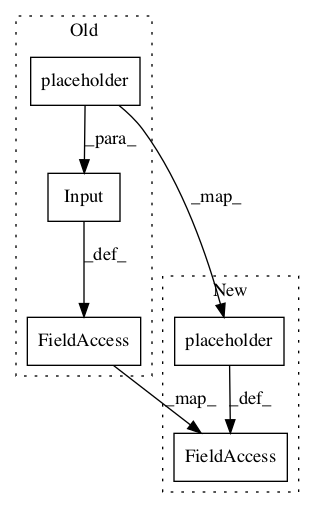

343cb214a384df7061e0e4300bc376ae4f66b5ef,deepchem/models/tf_new_models/support_classifier.py,SupportGraphClassifier,add_placeholders,#SupportGraphClassifier#,68

Before Change
// TODO(rbharath): Should weights for the support be used?
// Support labels
self.support_label_placeholder = Input(
tensor=tf.placeholder(dtype="float32", shape=[self.support_batch_size],
name="support_label_placeholder"))
self.phase = tf.placeholder(dtype="bool",
name="keras_learning_phase")
def construct_feed_dict(self, test, support, training=True, add_phase=False):
After Change
//self.support_label_placeholder = Input(
// tensor=tf.placeholder(dtype="float32", shape=[self.support_batch_size],
// name="support_label_placeholder"))
self.support_label_placeholder = tf.placeholder(
dtype="float32", shape=[self.support_batch_size],
name="support_label_placeholder")
self.phase = tf.placeholder(dtype="bool",
name="keras_learning_phase")
//////////////////////////////////////////////////////////////////////////////////////////////////////////////////////////////////////// DEBUG
In pattern: SUPERPATTERN
Frequency: 3
Non-data size: 5
Instances
Project Name: deepchem/deepchem
Commit Name: 343cb214a384df7061e0e4300bc376ae4f66b5ef
Time:
Author: null
File Name: deepchem/models/tf_new_models/support_classifier.py
Class Name: SupportGraphClassifier
Method Name: add_placeholders
Project Name: deepchem/deepchem
Commit Name: 343cb214a384df7061e0e4300bc376ae4f66b5ef
Time:
Author: null
File Name: deepchem/models/tf_new_models/multitask_classifier.py
Class Name: MultitaskGraphClassifier
Method Name: build
Project Name: deepchem/deepchem
Commit Name: 343cb214a384df7061e0e4300bc376ae4f66b5ef
Time:
Author: null
File Name: deepchem/models/tf_new_models/multitask_regressor.py
Class Name: MultitaskGraphRegressor
Method Name: build